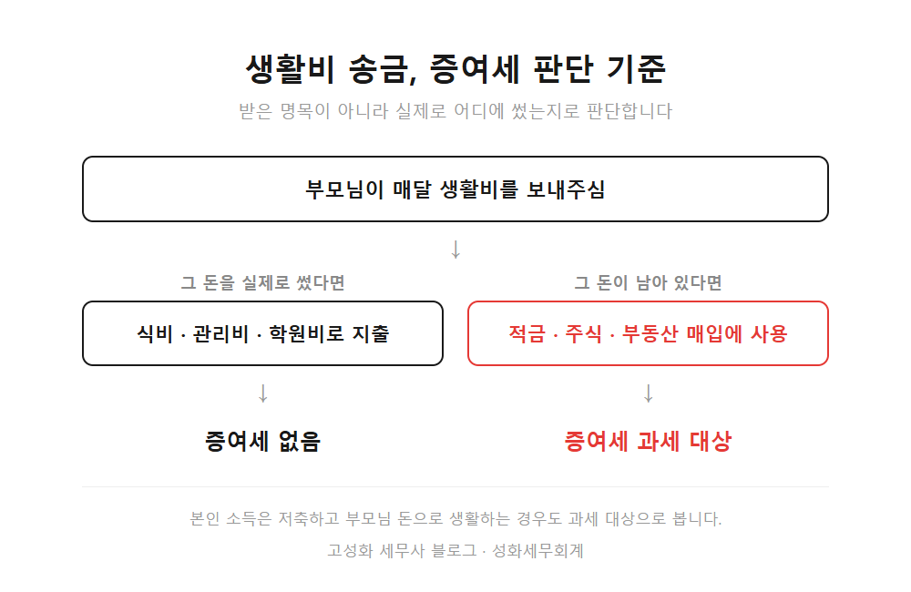
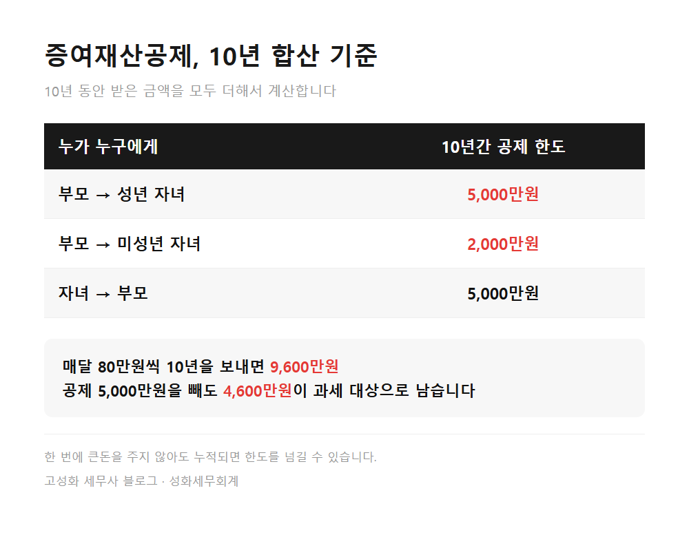
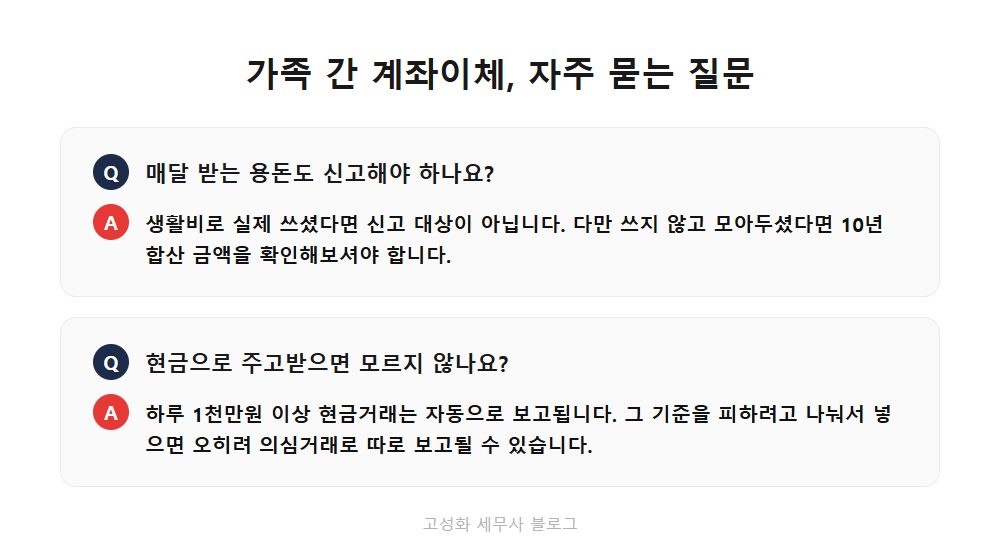

← 세무칼럼 목록
부동산·상속·증여

가족 간 계좌이체, 생활비도 증여세 될 수 있어요
성화세무회계에서 상담하다 보면 이런 질문을 자주 받습니다. "부모님이 생활비 좀 보태주신 건데 이것도 세금이 나오나요?" 대개는 괜찮습니다. 다만 괜찮지 않은 경우가 분명히 있고, 그 경계가 생각보다 뚜렷합니다.
이 글을 보고 계신 분은 아마 ① 부모님께 매달 일정 금액을 받고 계시거나, ② 반대로 자녀에게 생활비나 전세보증금을 보태주고 계시거나, ③ 가족끼리 오간 돈 때문에 나중에 문제가 될까 걱정되시는 분일 겁니다. 미리 말씀드리면, 금액보다 중요한 건 그 돈을 어디에 썼느냐입니다.
이 글에서 다루는 내용
- 생활비는 원래 증여세를 안 냅니다
- 명목이 아니라 용도를 봅니다
- 10년 5천만원, 알게 모르게 넘습니다
- 나눠 보내면 오히려 눈에 띕니다
한눈에 보기



정리하면
가족끼리 오가는 돈이 전부 세금 대상은 아닙니다. 생활비로 받아 생활비로 쓰면 문제없습니다. 다만 그 돈이 통장에 쌓이거나 투자로 넘어가는 순간 성격이 바뀌고, 10년을 합산하면 금액이 생각보다 커집니다.
이미 몇 년째 주고받은 돈이 있어서 지금 상황이 어떤지 궁금하시거나, 앞으로 자녀에게 목돈을 보태줄 계획이 있으시다면 미리 한 번 정리해보시길 권합니다. 계좌 내역과 시기를 놓고 보면 대략 정리가 됩니다. 편하게 문의 주세요.
본문 전체와 근거 조문은 블로그에서 확인하실 수 있습니다.